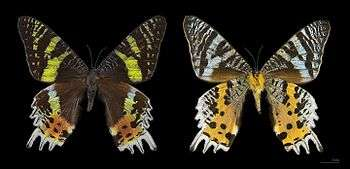
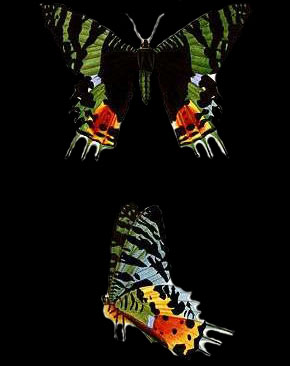

Chrysiridia Rhipheus


Le Chrysiridia Rhipheus est une espèce de lépidoptères se trouvant à Madagascar considérée comme étant un des plus beaux papillons du monde.
Son envergure est généralement dans les 80mm, l’espèce est caractérisée par un revers bleu marqué de noir, un fond noir marqué de doré sur le dessus ailes antérieures, une aire basale noire, vert doré, une aires médiane blanche, dorée et rouge sur ses ailes postérieures et plusieurs queues bleu clair et blanches…